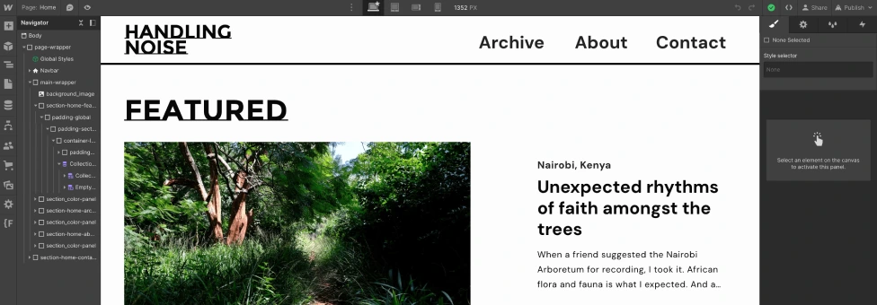
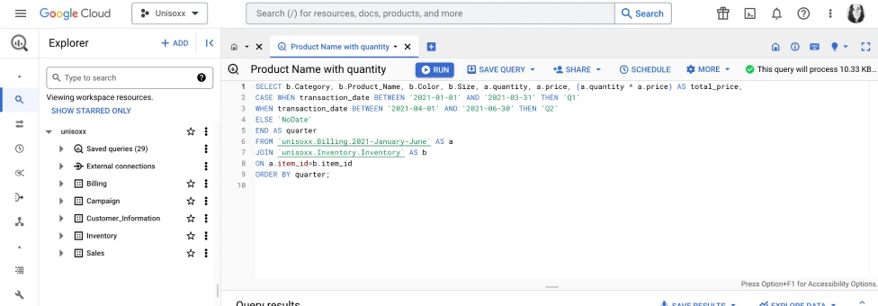

At heart, I'm a problem solver and systems thinker. Considering the entire ecosystem of a project and asking the right questions is my strength.
Delivering information in a people-friendly way is a skill I've honed through years of explaining complicated coffee processes and probably the skill I'm most proud of.
Wait... coffee? Yes, I'm in a career transition. Let me tell you a bit about my journey.
After a long career in specialty coffee, it was time for a change. UX seemed like a good use of my transferrable skills and I was surprised to find it all kind of conceptually... easy?
UX felt familiar because I had spent over a decade building and maintaining structures that keep customers caffeinated, employees happy and bosses making money.
BUT, I rarely felt the flow state while studying UX.
UI was next. Design felt natural to me, as I've run my own small experimental fashion label: conceptualizing, drafting patterns and producing the clothes. UI seemed a good fit.
With UI, there was flow, but no passion.
While designing, there was one thing I couldn't keep from creeping in to my mind: what about the developers? How would they feel about my designs? I started learning Webflow. No-code development brought me one step closer to cracking the developer puzzle.
More understanding, more flow...
Next, a round of sessions with a career coach turned me on to Marketing Analytics.
Together we realized that I had:
When I found the WBS Coding School Marketing Analytics course, I signed up!
Diving right in to the course, HTML and CSS were easy to grasp, thanks to my Figma and Webflow skills.
Flowing...
Querying databases, Google Tag Manager, JavaScript, everything the course threw at me, I rolled right through. Troubleshooting and debugging happily along the way.
DEFINITELY flowing, the beginnings of passion...
Not only did I learn technical skills during this process, I also proved to myself that I have the ability to provide meaningful quantitative and qualitative business insight.
Now that I'm prepared with an analytic tool belt and the understanding to clearly report my findings, I'm ready to find solutions for you.